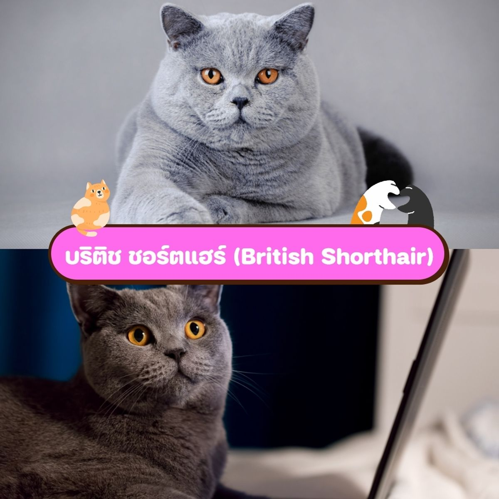
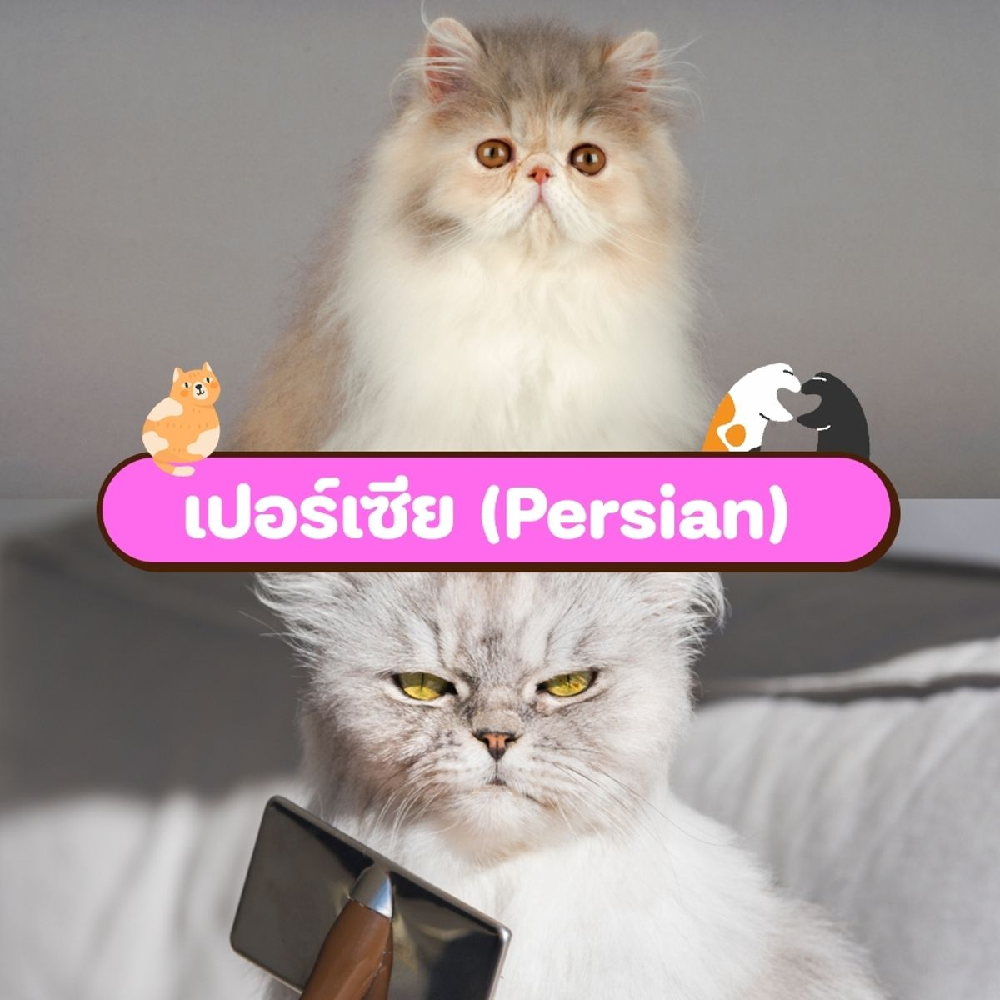
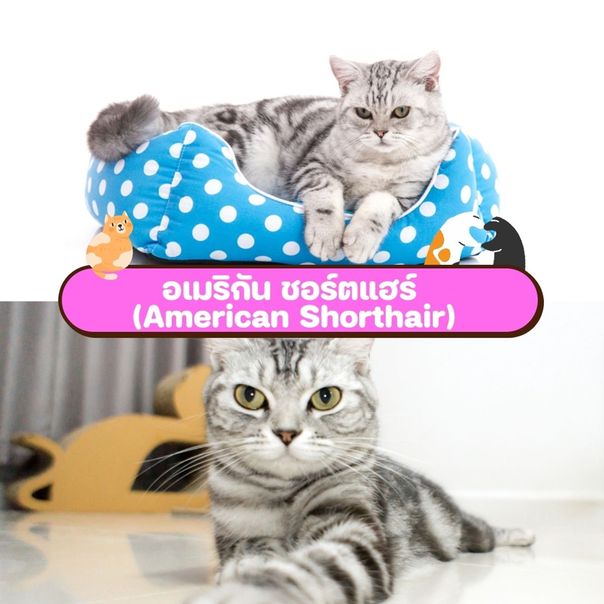
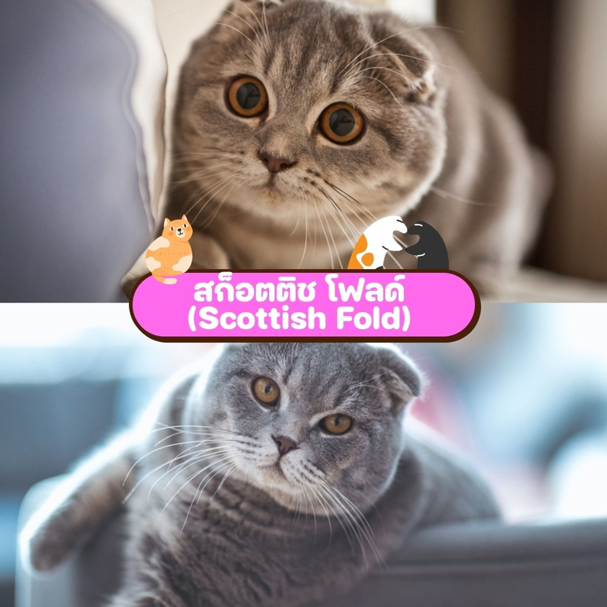
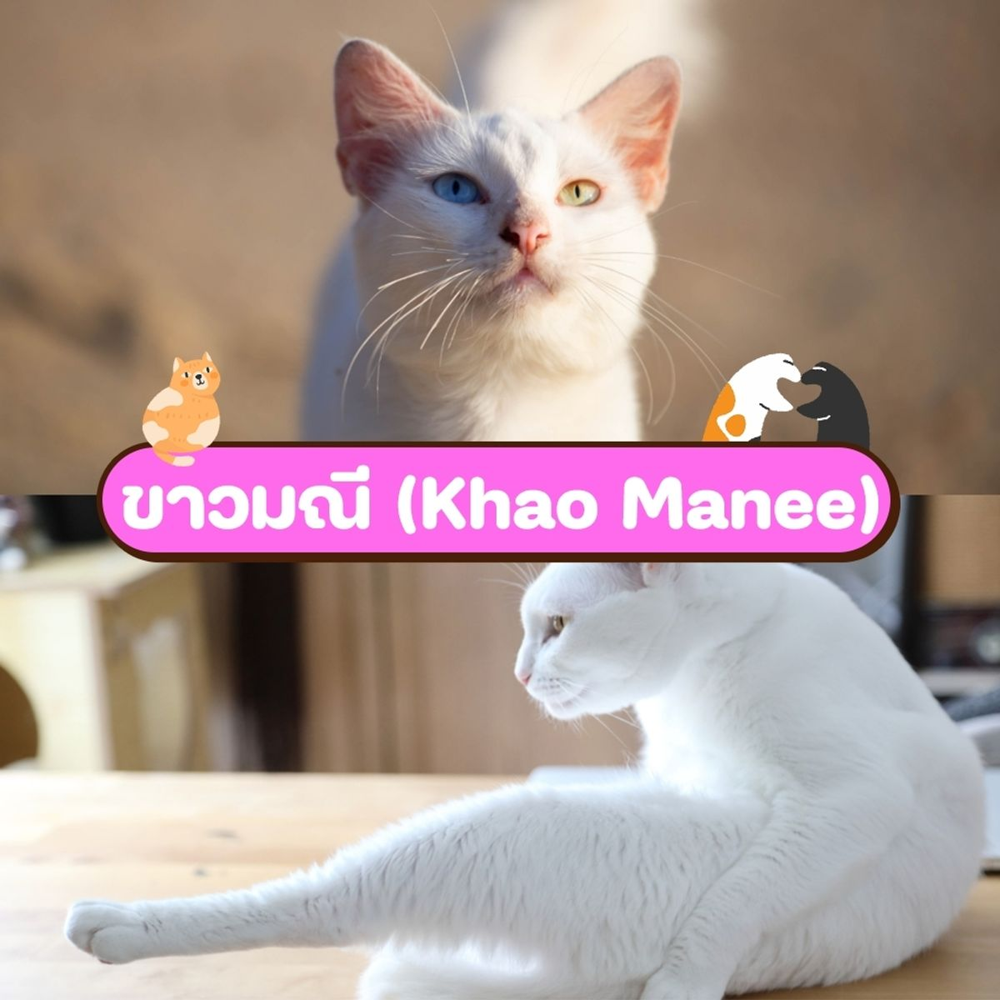
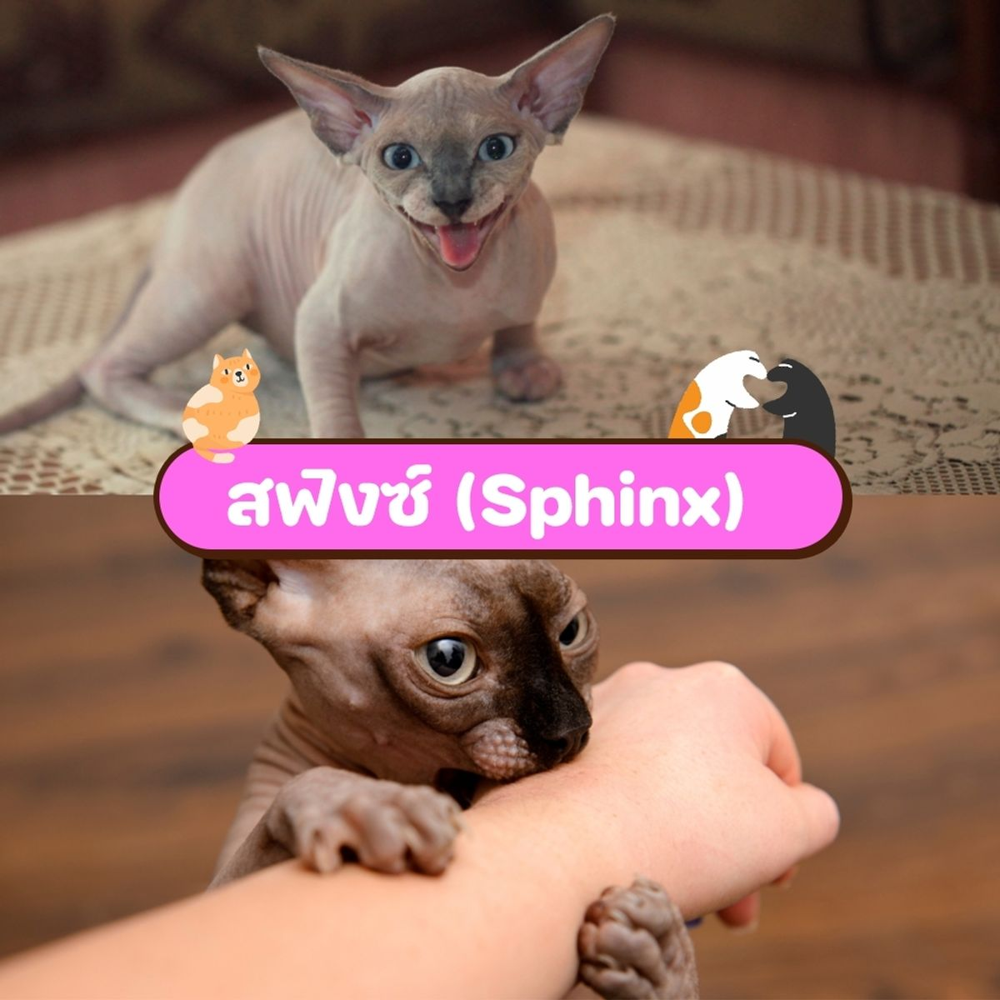
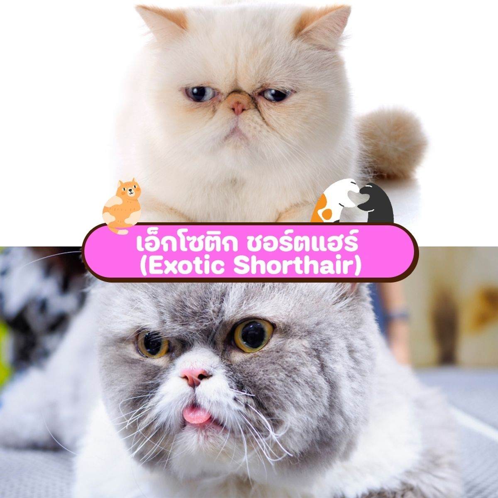
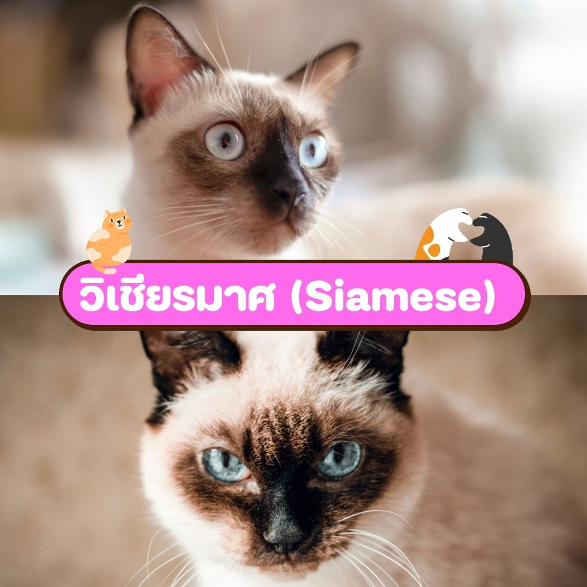

8 สายพันธุ์แมวยอดฮิตที่คนไทยนิยมเลี้ยงกัน
บริติช ชอร์ตแฮร์ (British Shorthair)
เป็นแมวง่ายๆ มือใหม่เลี้ยงได้ เป็นมิตรกับแมวตัวอื่น อ่อนโยน ชอบแสดงความรัก
เปอร์เซีย (Persian)
ฉายาแมวหยิ่ง ขนฟู เอกลักษณ์คือน้องจะไม่ค่อยสนใจมนุษย์ แต่บางทีก็จะชอบมาอ้อนให้เราหลง
อเมริกัน ชอร์ตแฮร์ (American Shorthair)
แมวลาย ขนแน่น หน้าเฉี่ยว คนไทยนิยมเลี้ยงพันธุ์นี้กันเยอะเลย
สก็อตติช โฟลด์ (Scottish Fold)
น้องแมวตาแป๋ว อ่อนไหวง่าย ขี้เล่น มีความแอคทีฟสูง
ขาวมณี (Khao Manee)
ขวัญใจมนุษย์เพราะน้องเป็นแมวที่เข้ากับคนอื่นได้ง่าย ไม่ชอบอยู่นิ่ง ชอบพูดชอบคุย
สฟิงซ์ (Sphinx)
แมวไม่มีขนสุดขี้อ้อน แมวสายพันธุ์นี้เซเลบ ดาราเลี้ยงกันเยอะมาก
เอ็กโซติก ชอร์ตแฮร์ (Exotic Shorthair)
แมวหน้าย่น ขนสั้น มีความอ่อนโยน ไม่ชอบเสียงดังโวยวาย
วิเชียรมาศ (Siamese)
เคลื่อนไหวเร็วและคล่องตัว มีความปราดเปรียว รักสงบ และเจ้าของมาก